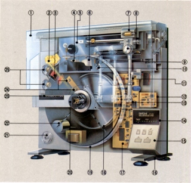
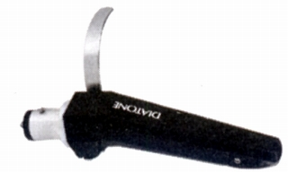
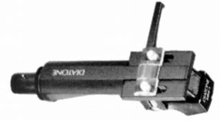
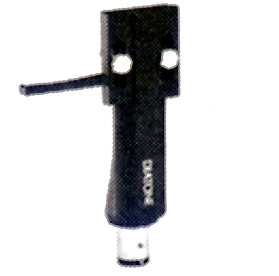

MITSUBISHI（ミツビシ）/DIATONE（ダイヤトーン）
三菱電機のオーディオブランド。スピーカーシステムでは長い歴史を誇り、NHK他の業務用システムやフルレンジユニットP-610系列で有名。しかしコンポーネントステレオとしては1960年代末頃参入した。1999年に一度カーオーディオを除く民生用オーディオスピーカーから撤退し、2005年になって三菱電機エンジニアリングが本ブランド製品を再登場させた。
アナログディスク関連では、オーディオ総合ブランドとして、盛時には各種のプレーヤーを発売していた。その中には奇抜な縦型のリニアトラッキングアームのプレイヤーもあった。しかしカートリッジや各種アクセサリーについてはあまり熱心ではなかった。

管理人の手元にある資料ではカートリッジ2種、ヘッドシェル1種が確認できた。いずれも国内オーディオの爛熟期である1970年代末のもの。
�T.カートリッジ
MM-2

■価格 10,000円
■発電方式 MM型
■出力電圧 3.5mV/1kHz
5cm/sec
■針圧 最適 2.0g
■再生周波数帯域 20-18,000Hz
■交換針 3D-MM2 6,000円
■発売
1979年
■販売終了 1983年
■備考 シェル一体型。
当時の広告ではオルトフォン製とアナウンスされていた。
縦型設置のアナログプレイヤーLT-5Vにはこのカートリッジを標準装備した機種(LV-5VC)がある。
ナガオカ針��62-10、JICO針��51-MM2が利用可能。
MM-1

■価格 12,500円
■発電方式 MM型
■出力電圧 3mV/1kHz
5cm/sec
■針圧 1.5〜2.0g（最適 1.8g）
■再生周波数帯域 15-22,000Hz±2dB
■チャンネルセパレーション
26dB
■負荷抵抗 47kΩ
■針先 0.3×0.7mil楕円
■自重 12.2g（ヘッドシェル含む）
■交換針
3D-MM1 6,000円
■発売
1978年6月
■販売終了 1986年頃
■備考 ヘッドシェル付き
価格は1978年頃のもの
ナガオカ針��74-33、JICO針��51-MM1の利用が可能。
�U.ヘッドシェル
HX-1

■価格 2,500円
■重量 6.2g
■備考 マグネシウム合金ダイキャスト製
リード線は純銀線
基本的にMM-1付属シェルと同じもの？